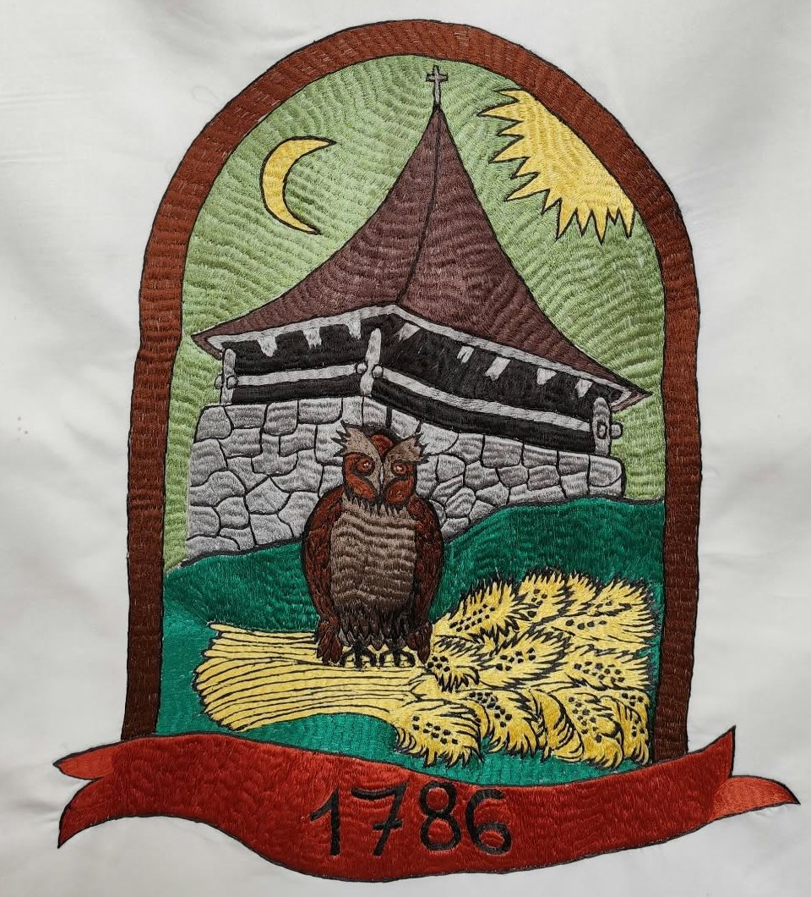

[KÉP]
VÁGÁS · 1786 ÓTA
A vágási iskola első írásos említése 1786-ból való; az egyházközség által épített iskolaház 1889-ben készült el Vágás és Dobó gyermekeinek.
2000 óta az iskola Márton Áron püspök nevét viseli, akinek jelmondata a tanári kar hitvallása is.

Non recuso laborem
„Nem utasítom el a munkát” – Márton Áron püspöki jelmondata
Székely Zoltán Hosszútövis falvai (1999) című monográfiája alapján
A vágási iskola első írásos említése.
Szőcs János plébános megszervezi az iskolatanácsot Vágás, Dobó és Béta tagjaival.
Felépül az új, két tanerős iskolaház; mestergerendáján ma is olvasható az építés éve.
Az iskola felveszi Márton Áron nevét.
Márton Áron (Csíkszentdomokos, 1896 – Gyulafehérvár, 1980) 1938-tól haláláig, negyvenkét évig volt erdélyi római katolikus püspök. A falusi iskolák ügyét a temploméval egyenrangúnak tartotta. 1949 és 1955 között bebörtönözték, de elveihez mindvégig hű maradt.
„Az iskola, ha nem templom, akkor barlang.”Bővebben a névadóról